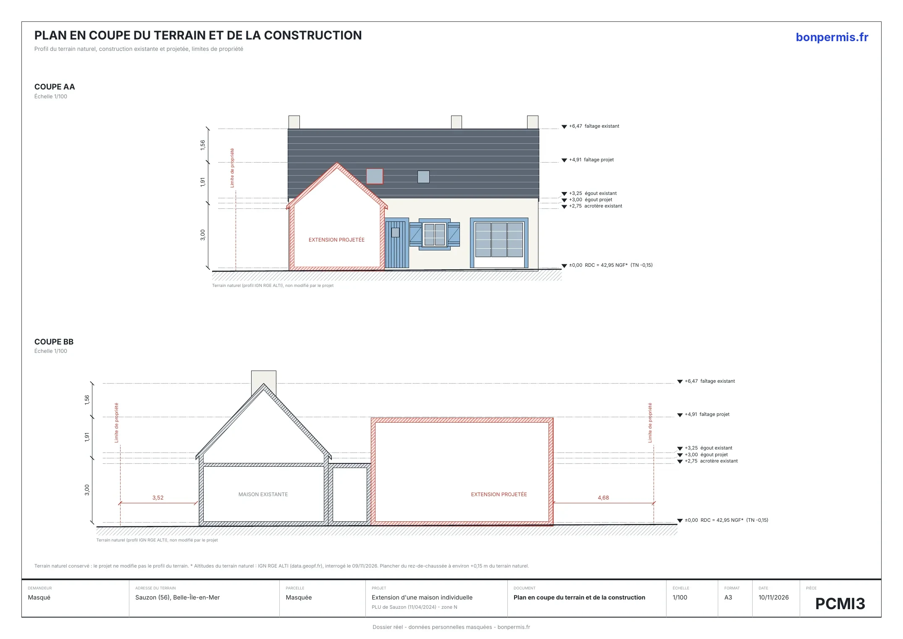
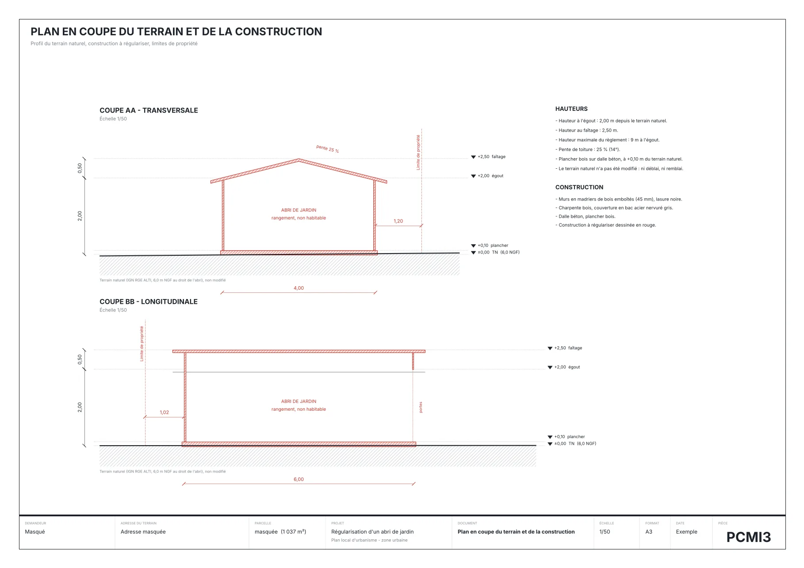

Plan de coupe : exemples et méthode (DP3, PCMI3)
Deux plans de coupe tels qu'on les livre, ce que la mairie veut y voir, et comment le dessiner.
Exemple 1 : une extension de maison

Exemple 2 : un abri de jardin

Ce qu'un plan de coupe doit montrer
- Le terrain en trancheSon profil avant les travaux, et après si le projet le modifie (terrassement, remblai).
- La construction posée dessusComment elle s'implante par rapport au sol.
- Les hauteursAu bas du toit et au sommet, mesurées depuis le sol.
- Les limites du terrainPour voir la distance entre la construction et les voisins.
Comment le faire
Tracez le trait de coupe sur le plan de masse
Une ligne qui traverse le projet, avec une lettre à chaque bout (A et A').
Dessinez le sol le long de cette ligne
À la même échelle que le plan de masse ou plus grande (1/100 ou 1/50), avec la pente réelle.
Posez la construction
Les murs, le toit, le plancher, à l'échelle.
Cotez les hauteurs
Du sol au bas du toit, du sol au sommet. Ce sont elles que la mairie compare à son règlement.
Pièce prévue par l'article R. 431-10 du code de l'urbanisme. Mis à jour le 25 novembre 2026.
À lire aussi : Exemples de plan de masse · Comment faire un plan de masse · Toutes les pièces du dossier
Questions fréquentes
Le plan de coupe est-il toujours obligatoire ?
Pour un permis de construire, oui. Pour une déclaration préalable, il est demandé quand le projet modifie le profil du terrain : construction neuve, extension, piscine, terrasse surélevée.
Quelle différence entre DP3 et PCMI3 ?
C'est la même pièce : DP3 dans une déclaration préalable, PCMI3 dans un permis de construire de maison individuelle.
Où placer le trait de coupe ?
Là où il montre le mieux le projet et la pente du terrain, en général en travers de la construction. Son emplacement doit être reporté sur le plan de masse.
Comment connaître la pente de son terrain ?
En la mesurant sur place, ou à partir des altitudes de l'IGN, consultables sur le Géoportail. Sur un terrain plat, un trait horizontal suffit.